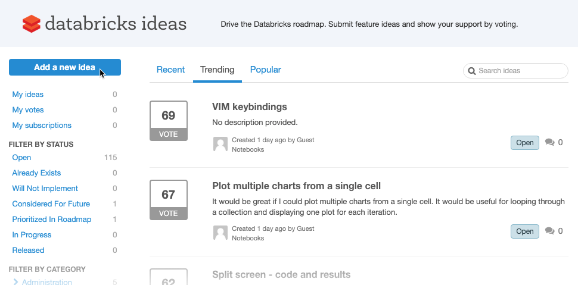
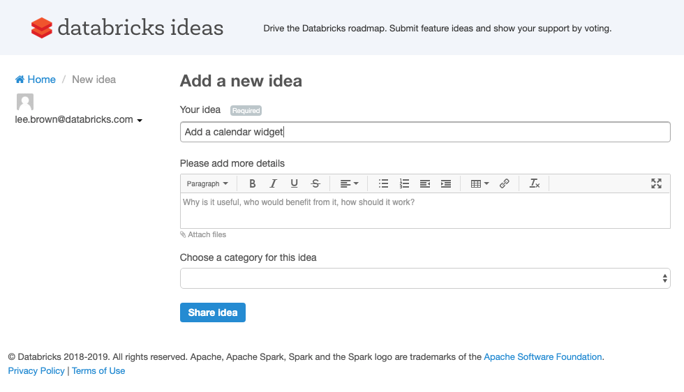
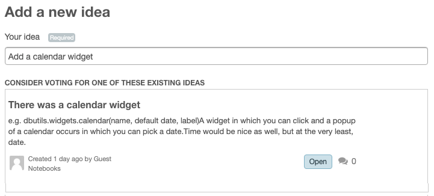
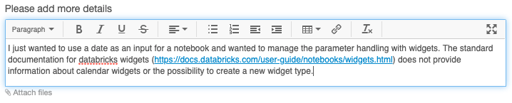
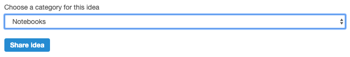

Submit product feedback
You can submit feedback directly to the product team to influence the Databricks product roadmap in the following ways:
To quickly submit feedback about your experience with Databricks, fill out the feedback form in your workspace.
To interactively contribute to the product roadmap, submit a feature request in the Ideas Portal. You can view, comment, and vote up other users’ requests. You can also monitor the progress of your favorite ideas as the Databricks product team goes through their product planning and development process.
Submit feedback from the workspace
To quickly submit product feedback from the Databricks workspace, do the following:
Log in to your Databricks workspace.
In the top navigation bar, click and select Send feedback.
In the text box, enter a description of the problem you’re trying to solve and how your idea will help you.
(Optional) To submit a screenshot of the problem, click Capture a screenshot.
Click the tab, window, or screen you want to capture, and then click Share.
Use your cursor to highlight or redact information, and then click Done.
(Optional) Select the Databricks may contact me about this feedback check box.
Click Submit.
Create an idea in the Ideas Portal
For a quick tutorial on submitting an idea directly to the Ideas Portal, watch this video:
Go to ideas.databricks.com.
Note
If you go directly to
ideas.databricks.comand you do not have an active workspace session, you’re prompted to log in to Databricks first. If the sign-in system cannot determine your workspace, you might be prompted to enter your workspace domain in the format<deployment-name>.cloud.databricks.com.Click Add a new idea.
Provide a one-sentence summary describing the nature of your idea.
You might be asked if an existing idea satisfies your request. If a suggested idea does the job, feel free to vote on it and provide a comment instead.
Enter more details to describe the problem you’re trying to solve and how your idea will help you.
Choose the category that best describes the problem being solved. If there are multiple categories that apply, pick the one that fits best.
Click Share Idea.
Vote and comment on ideas
You can view, vote, and comment on other users’ ideas. The number of votes indicates how important an idea is to Databricks users and helps Databricks product managers prioritize ideas.
If you see an idea that you agree with, go ahead and vote for it and enter a comment to tell everyone why. The more you explain, the easier it is for the product team to meet your needs.
To vote, just click the Vote icon.
You can vote only once for each idea.
To enter a comment, click the comment icon.
How does the product team use ideas?
The product team considers these ideas each time they prepare for quarterly roadmap planning. Product managers use the following statuses to indicate their decision:
Open: not yet reviewed; waiting on more information before making a decision.
Considered For Future: will not be implemented immediately, but will be revisited at a later date.
Prioritized In Roadmap: work has not yet begun, but product and engineering plan to work on it imminently.
In Development: product and engineering are actively working on the feature.
Released: requested feature has been shipped!
Already Exists: requested feature is already available in the product.
Will Not Implement: the product team has determined that there is not enough support for an idea and it will not be implemented.
What does it take for an idea to be prioritized in the Databricks roadmap?
Two of the most important company values at Databricks are to let the data decide and to listen to our customers. If an idea has garnered a significant number of votes, product managers will dig deeper into the idea and determine the best way to address the request.
SLA for product management response
The product management team reviews ideas regularly and monitors the Ideas Portal to ensure that it is up to date.